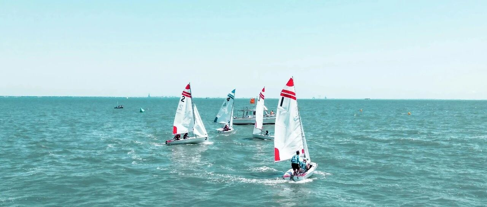

对抗时间的最优解~
这篇较长，主要写期权、斐波那契、恐慌指数（VIX）作用，以及应对上涨、下跌时适用做多、做空的主要工具。
一、期权。
我先亮明自己的观点，认不认可随你:
期权的诞生，是为了机构交易而存在的，因为机构相当于一艘大船（体量大），必须要买保险，因为一旦启航，开船费、掉头的成本、维护的成本都很高；
期权相当于定期保养，可以让大船航行的更好，99%的散户不需要交易期权，因为体量很小，完全可以随时满仓买入卖出，没必要学习这些复杂的交易；
期权本质就是一个零和游戏，说白了就是弱肉强食,你赚钱的前提是别人亏钱，反之亦然；
玩期权的最好的结果就是娱乐，但绝大多数人因为人性的贪婪和以小博大的心理，最终会亏损。最好小赌怡情，不要投入太多。
期权是美股投资的一个特色，专业的人会把期权当一个工具，保障自己在股市上涨时多赚，在下跌时还能少亏。
做期权的买家不管是call还是put，大部分都是亏钱的，因为买期权的人必须要对市场的走势非常准确才能赚钱。
如果是市场横盘买 call和买put都不能赚钱，买期权所花的钱很快就被时间吃掉了，所以做期权应该做卖家比较好。
期权是工具箱，短期交易赚钱需要预测，实际上没有办法预测，所以期权仅仅就是功能多样的工具箱而已。
相比股票，期权交易的风险也更高。这风险不一定来源于期权本身，更多的是对于投资者知识储备更高的要求。
期权交易，最忌讳的就是照搬股票交易的思路来做，单纯靠预测涨跌是不足以在期权交易中赚钱的。
下面，进入期权的主题。
期权，是你能够在未来的某个时间以固定的某个价格买入或卖出的权利。从期权的定义来看，它其实就是给不确定的未来加的一份保险。
首先，入手期权要选对正股，也就是选择要买的期权所对应的股票。
虽说期权和股票的玩法不同，但期权最终也脱离不了它所对应的正股，尽量选择自己熟悉的个股。
并不是所有的股票都适合做期权交易，选择正股时最好选择交易量大的股票，龙头个股最佳。
比如苹果、特斯拉，英伟达这些行业龙头个股，期权的流动性很强，想买能买的到，想卖能卖的出去。
其次，要想在期权策略中做出明智的选择，我们需要了解一个重要的知识点：
IV，指的是一只股票未来股价波动的大小，它对于期权的定价起到十分关键的作用。
期权的价格，正股未来股价的波动率越高（隐含波动率IV越高），那么期权的价格也就越贵；反之，IV越低，期权的价格也就越便宜。
一般来说，IV在公司出财报前或者发布重大消息后，都会有明显的提高，因为这时往往股价都会有很大的波动，也是期权交易最频繁的时候。
在选择期算策略时，我们首先要看IV的数值，IV高时，说明期权的价格也高，这时候就更适合选择卖期权的策略。
因为卖期权，是靠收取权利金（期权费）赚钱，期权价格高时，你就能赚取比平时更高的权利金。
同理，IV低时，说明期权价格也低，这时买期权的策略就更划算，因为期权的成本相对较低。
实践中，为了能够直观的判断出隐含波动率IV的高低，往往还会观察另一个关于股价波动率的数据，历史波动率HV:
当IV高于HV时，这时就更适合选择卖期权的策略；如果IV低于HV，这时就更适合选择买期权的策略。
比如，你现在看涨英伟达，并且想要通过交易英伟达期权赚钱，那么摆在面前的期权策略就有两种:
一种是买英伟达的call option, 期待英伟达的股价涨，然后赚取期权的差价；另一种是裸卖put option, 期待股价不要跌过你设定的行权价，然后赚取期权费（权利金）。
IV和HV的比较是最直观的选择期权策略的依据。当然，选择期权策略时经常还需要考虑除了IV之外其他的因素。
然后是选择行权价和到期日。
这背后所需要应用的知识点是相通的，涉及到期权领域最重要的两个概念:
时间价值和内在价值。所有的期权价格，都是由这俩成，没有例外。
内在价值相对好理解，对于我们做决策的影响也比较小。
期权中主要影响我们做决策的，是时间价值的多少，时间价值的性质是时间越长，价值越大，因此一个期权的到期日越远，它的时间价值也就越高，价格也就越贵。
当买完一个期权后，持有的过程中随着到期日的不断临近，时间价值也在不断流逝，也就是说，即便正股股价不变，你啥也不干，期权就会让你不断的亏钱，这点与持有股票不同。
因此对于买期权这个策略来说，只有当你预测对了方向才能赚钱，预测错或者股价横盘你都会亏钱。
时间价值的这些性质对于选择期权的到期日十分重要。
行权价在离当前股价越近时，时间价值就越高，时间价值的最高点就在行权价等于当前价格的时候，这个规律放置四海皆准。
由于时间价值的这个性质，在买期权这个期权策略中选择行权价时，都会尽量避免将行权价定在当前股价附近，因为这里的时间价值高。
期权的时间价值会在持有的这段时间内不断流失，持有时间价值高的期权时，时间价值流逝的也快，也可以说是期权的贬值速度快。
因此，一般选择买入具有内在价值的期权是较好的选择，因为这里的时间价值低，期权的贬值速度慢，但内在价值的升值速度是相同的。
但是买内在价值的期权也有不好的地方，那就是如果股价没能如愿上涨，所亏损的就不仅仅是时间价值的流逝，还有已有的内在价值的折损。
这其实很合理，想要获得更高的收益，就理应承担更高的风险。
二，斐波那契。
斐波那契回撤，是一种基于黄金分割的技术分析工具，广泛用于捕捉回调支撑位和寻找反弹阻力位。
在交易中，我们主要关注这几组斐波那契回撤水平：
23.6%，轻度回撤，表明市场较为强势；38.2%，常见回撤位，趋势可能继续；50%，心理支撑位，非严格斐波那契数值，但市场普遍认可。
61.8%，黄金分割位，强支撑或阻力区；78.6%，深度回撤，若失守则可能趋势反转。
以上数值，可以在上涨趋势中，选择波段最低点到最高点绘制斐波那契回撤线，以寻找价格回调时的支撑位；在下跌趋势中，则从波段最高点到最低点绘制，以寻找价格反弹时的阻力位。
在实际使用过程中，斐波那契回撤不适合做单独决策工具，应该和MACD、均线等结合使用:
一般情况下，斐波那契61.8%回撤位+MA200均线，是强支撑区域；斐波那契38.2%回撤位+MACD金叉，是可能反弹信号；斐波那契78.6%回撤位+RSI超卖，是低吸机会。
三，应对涨跌的工具。
美股触底上涨时，做多；美股高位下跌时，做空。
做空要很谨慎，不轻易做空，除非很有把握，且做空要控制区间，只做最有把握的阶段。
比如特斯拉460开始做空，我看选出三个支撑点位，320、260、211美元，那么正常情况下，我只会从460做空到320，而其他的放弃不吃，现实中这一轮操作，我也是这么做的。
因为越往下，难度越大，且市场随时反弹，风险不可控。
个股的做多做空，主要对应的是2倍做空、2倍做多这类工具。
然后就是ETF等工具。
触底反弹上涨时，可以买入做多的工具:
纳指100做多主要有QQQ，2倍做多有QLD，3倍做多有TQQQ；道琼斯做多的主要有DIA，2倍做多有DDM；恐慌指数适合的有VIX和SVXY；
标普500做多的主要有SPY、VOO、IVV等（怎么选择，之前写过具体的:那些我消失以后的日子~），2倍做多有SSO，3倍做多有UPRO。
涨得差不多了，就要卸掉杠杆，不然耗损会很大。
高位下跌时，应该要等下跌的趋势得到印证了，再选择做空。适合的工具有:
纳指做空的有PSQ，2倍做空的QID，3倍做空的SQQQ；标普500做空的有SH，2倍做空的SDS，3倍做空的SPXU;
道琼斯做空的有DOG，2倍做空的DXD，3倍做空的有SDOW;
恐慌指数适合的有VXX、VXZ，2倍杠杆的UVXY、TVIX。
一样的，跌到预期区间，就要卸掉杠杆和停止做空，要不容易亏损。
比如纳指2万点开始下跌，跌到1.9万点左右，下跌趋势得到了印证，这时开始买入做空纳指的工具;
预期是从高点（2万点）下跌20%，也就是16150点左右，就要停止做空，把做空工具清仓。
因为再往下，空间不大，除非出现史诗级大暴跌（美股历史上的下跌幅度超过20%的并不多），要不然达到预期了就止盈。
如果在16150点还做空，那往下的空间不仅小，还将面临美股大盘突然反弹，会直接造成亏损。
做投资，不是赌博，只做自己最有把握的事。对抗时间的最优解，是不贪、知足，是投资自己、做多自己、充盈自己。
如果没有把握，那就按兵不动，不要做最好，虽然没有赚，但起码不会亏损。
总之，结合自己的情况，选择适合自己的工具，适合自己的才是最好的。
就这样吧。
免责声明：本人提供的信息仅供参考，不构成投资建议。本人的交易不代表任何立场；投资者应根据自身财务状况、投资目标等情况自主做出投资决策并承担投资风险。投资有风险，入市需谨慎。